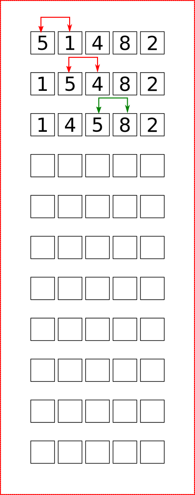
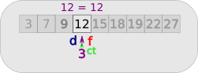

Premiers algorithmes de tri de tableaux
Trier de manière naturelle : les algorithmes naïfs
Trier à la main
On donne une main de 5 cartes d'un jeu de 54 cartes. Trier les cartes par ordre croissant, sans tenir compte des couleurs. Vous devrez marquer dans le tableau suivant l'ensemble des changements de positions des cartes dans votre main :
Avez-vous tous utilisé la même méthode ?
Tri par insertion
Principes
Le principe du tri par insertion est le suivant :
- un tableau de dimension 1 est considéré comme trié, donc le sous-tableau contenant le premier élément est trié ;
- on prend ensuite le deuxième élément, et on l'insère à la bonne place dans le sous-tableau trié ;
- on recommence en considérant chaque élément du tableau.
Exemple
On veut trier le tableau [6, 5, 3, 1, 8, 7, 2, 4] par un tri par insertion. Compléter le tableau suivant en représentant :
- par des flèches bleues les déplacements d'éléments déjà triés ;
- par des flèches rouges l'insertion de nouveau éléments dans le sous-tableau trié (cases jaunes).
A venir

Algorithme en pseudo-code et complexité
Algorithme
Quelques remarques
- Le tri par insertion est un tri en place, car il trie un tableau sans avoir besoin de tableau auxilliaire.
- La complexité du tri par insertion est quadratique, c'est-à-dire en \(\mathscr{O}(n^2)\) dans le pire des cas, quand le tableau est à l'envers. C'est aussi le cas moyen - ce qui n'est pas très bon en terme de complexité en temps.
- Cependant, pour un tableau trié ou presque trié, la complexité tombe en \(\mathscr{O}(n)\), ce qui est une complexité linéaire, très efficace.
Application : Python
Construire une procédure (c'est-à-dire une fonction sans valeur de retour) Python triInsertion(tab) qui trie le tableau tab par un tri par insertion.
def triInsertion(tab):
# Parcour de 1 à la taille du tab
for i in range(1, len(tab)):
k = tab[i]
j = i-1
while j >= 0 and k < tab[j] :
tab[j + 1] = tab[j]
j -= 1
tab[j + 1] = k
Le tri par sélection
Principes
Le principe du tri par sélection est le suivant :
- On cherche le plus petit élément du tableau, et on échange sa place avec l'élément d'indice 0.
- On recherche ensuite le plus petit élément dans le sous-tableau commençant à l'indice 1, et on échange sa place avec l'élément d'indice 1.
- On recommence ainsi en allant jusqu'à l'avant dernier élément.
Exemple
On veut trier le tableau [6, 5, 3, 1, 8, 7, 2, 4] par un tri par sélection. Compléter le tableau suivant en représentant par des flèches rouges les échanges de positions entre éléments
A venir
Algorithme en pseudo-code et complexité
Algorithme
Quelques remarques
- Le tri par sélection est un tri en place, car il trie un tableau sans avoir besoin de tableau auxilliaire.
- La complexité du tri par sélection est quadratique, c'est-à-dire en \(\mathscr{O}(n^2)\) ddans tous les cas, puisqu'il faut parcourir chques sous-tableau afin de trouver son minimum, et ce pour chaque élément du tableau.
Application : Python
Construire une procédure (c'est-à-dire une fonction sans valeur de retour) Python triSelection(tab) qui trie le tableau tab par un tri par sélection.
def triSelection(tab):
for i in range(len(tab)):
# Trouver le min
min = i
for j in range(i+1, len(tab)):
if tab[min] > tab[j]:
min = j
tmp = tab[i]
tab[i] = tab[min]
tab[min] = tmp
Un autre algorithme de tri : le tri à bulle
L'algorithme de tri à bulles consiste à trier la liste en n'autorisant qu'à intervertir deux éléments consécutifs de la liste. On peut le décrire comme ceci:
- Parcourir tout le tableau et comparer les éléments consécutifs. Lorsque deux éléments sont dans le désordre, les inverser.
- Une fois la fin du tableau, recommencer.
- S'arrêter dès qu'un parcours du tableau n'a échangé aucun élément.
Exemple
Effectuer le tri à bulle du tableau [5, 1, 4, 8, 2]

A venir
Exercice
- Pourquoi, à votre avis, appelle-t-on ce tri un « tri à bulle » ?
- Quelles propriété at-on après un parcours complet d'un tableau ?
- Ecrire un algorithme représentant un tri à bulle.
- Quelle est la complexité de cet algorithme ?
- Implémenter une procédure python
triBulle(tab).
A venir !
Algorithme de recherche dichotomique
Présentation de l'algorithme
Dans le cas d'une séquence ordonnée triée de valeurs (c'est-à-dire une liste, un tuple, un tableau), un des algorithmes de recherche les plus connus est celui de la recherche dichotomique. On peut le décrire ainsi :
Recherche dichotomique
Si T est une liste triée par ordre croissant, et qu'on cherche l'élément el :
- trouver l'indice de la position la plus centrale du tableau, on note
ctl'élément à cette position ; - comparer
elavecct:- si ils sont égaux, alors retourner l'indice de
ct; - si
elest strictement inférieur àct, on recommence l'étape 1 dans le sous-tableau gauche (les valeurs inférieures àct) ; - si
elest strictement supérieur àct, on recommence l'étape 1 dans le sous-tableau droit (les valeurs supérieures àct)
- si ils sont égaux, alors retourner l'indice de
- si à un moment on cherche dans un sous-tableau vide, c'est que
eln'est pas dansT.
Exemple débranché
On cherche dans le tableau ci-dessous la valeur 12 :
On part d'un tableau trié donné
Entre les indices 0 et 8, on calcule ct qui vaut 4.
Le nombre cherché 12, étant inférieur à 15, on va chercher dans le sous-tableau gauche.
Le sous-tableau commence à l'indice 0 et va jusqu'à l'indice 3.
Entre les indices 0 et 3, on calcule ct qui vaut 1.
Le nombre cherché 12, étant supérieur à 7, on va chercher dans le sous-tableau droit.
Le sous-tableau commence à l'indice 2 et va jusqu'à l'indice 3.
Entre les indices 2 et 3, on calcule ct qui vaut 2. Le nombre cherché 12, étant supérieur à 9, on va chercher dans le sous-tableau droit.

Le sous-tableau commence et fini à l'indice 3.
Donc ct vaut 3.
On compare 12 avec 12. Le nombre est trouvé.

On renvoie ct, soit 3, c'est-à-dire l'indice de 12 dans le tableau.
Complexité de l'algorithme de dichotomie
Nous avons vu que le parcours naïf d'un tableau pour trouver une valeur donnée est dans le pire des cas en \(\mathscr{0}(n)\) (complexité linéaire). Cela signifie que si le tableau est de taille \(n\), il faudra faire un nombre d'opérations proportionnel à \(n\) pour déterminer qu'un nombre n'appartient pas au tableau.
La recherche dichotomique est-elle meilleure ? Oui, si on prend en compte le critère du nombre de comparaisons effectuées.
Dans notre exemple, le tableau est de taille \(9\). Avec un algorithme naïf, il faut \(9\) comparaisons pour prouver qu'un nombre n'appartient pas au tableau.
Avec l'algorithme de recherche dichotomique, à chaque itération de l'algorithme, on travaille sur un tableau 2 fois plus petit que le précédent, ici 9->4->2->1, et on compare une fois par sous-tableau étudié. Il n'y a donc besoin que de \(4\) comparaisons. On remarque que 9 est compris entre \(2^3\) et \(2^4\).
Sur un tableau plus grand, de taille \(100\), l'algorithme naïf nécessite \(100\) comparaisons. Avec l'algorithme de recherche dichotomique,on utilisera des tableaux de tailles 100 -> 50 -> 25 -> 12 -> 6 -> 3 -> 1, soit \(7\) comparaisons. On remarque que \(2^6 \leqslant 100 <2^7\).
Fonction
Compléter le code suivant, en respectant les tests demandés :
def nb_comparaisons(n : int) -> int :
""" renvoie le nombre de comparaisons nécessaires lors de l'exécution
de l'algorithme de recherche dichotomique sur un tableau trié de taille n,
avec n entier naturel non nul.
>>> nb_comparaisons(9)
4
>>> nb_comparaisons(100)
7
>>> nb_comparaisons(1)
1
"""
assert isinstance( n, int), "n doit être entier"
assert ..., ...
nb = 0
while 2**... <= ... :
nb += ...
return nb
Fonction \(\log_2\)
La fonction logarithme binaire est la fonction définie de \(\mathbb{R}^+\) vers \(\mathbb{R}\) par \(\log_2 : x \mapsto y\), avec \(y\) tel que \(2^y = x\).
Complexité en temps de l'algorithme de recherche dichotomique
L'algorithme de recherche dichotomique est en complexité en \(\mathscr{O}(\log_2(n))\), c'est-à-dire en complexité logarithmique, donc beaucoup plus efficace que l'algorithme naïf.
Voici un tableau récapitulant le nombre d'opérations de comparaisons effectuées dans les deux algorithmes :
| Taille du tableau | Algorithme naïf | Algorithme dichotomie |
|---|---|---|
| \(1~000\) | ||
| \(1~000~000\) | ||
| \(1~000~000~000\) |
Un exemple d'implémentation en Python
def recherche_dichotomique(x : int, tab : list) -> int :
""" fontion renvoyant l'indice de l'élément x dans le tableau tab si celui-ci est présent
et -1 dans le cas où x n'est pas présent"""
deb = 0
fin = ...
while deb <= fin :
ct = ...
if x == tab[ct] :
return ...
elif x < tab[ct] :
fin = ...
else :
...
return ...
Le programme présenté ci-dessus n'est cependant pas optimisé, car il effectue en réalité deux comparaisons par tour de boucle. Pour voir un article plus complet sur la recherche dichotomique, notamment les preuves de correction et de terminaison de l'algorithme, voir ici.